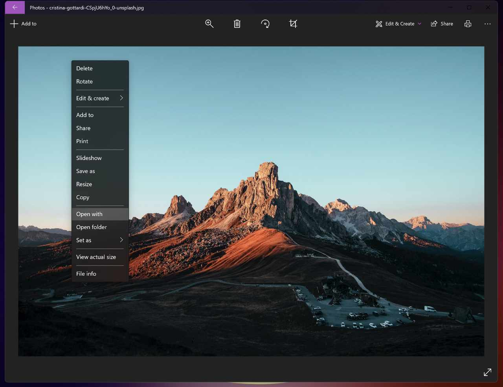

Affinity Photo 2's features can be accessed from the native Windows Photos app to edit library items.

For users of Windows operating system, it is now possible to integrate the native Windows Photos app with Affinity Photo 2 into the editing workflow, which for many may be the preferred method of completing extended power-edits and managing files.
Complex edits involving advanced features, such as layers, masks and live filters, for which you require multiple editing sessions are best conducted by exporting to an external file, loading that file into Affinity Photo 2, saving your work in the .afphoto format.
Do one of the following: